Twelve days by train: Tokyo, a day in Nikko, a night under Mount Fuji, Kyoto and Nara, Osaka, Hiroshima and Miyajima. Probably the best trip of our lives, mostly because of the people.
Shorter versions skip whole days, the ones I'd skip myself; longer ones add only what I'd go back for. Every day has a Google Maps link; the My Maps file has every place (import it at google.com/mymaps).
We went for the shrines and temples, Mount Fuji and the food. Japan felt like an intense mix of the future and the past: the neon glow of Akihabara one night, a centuries-old shrine in a cedar forest the next morning. But what we remember most is the people: a cab driver who went out of his way to show us Fuji, a train driver who stepped off his train to help us buy tickets, strangers who stopped whenever we looked lost. We came home grateful. Read more in The people, at the end.
Fly into Tokyo and out of Tokyo, and go everywhere else by train, with a couple of buses around Mount Fuji. Cities are best on foot; the days swing between neon cities, old shrines and temples, and two of the most beautiful nature days of the trip: Mount Fuji at sunrise and the view from Mount Misen. It’s an ideal first trip to Japan: the classic sights, in a sensible order. If you’ve been before, skip the most crowded famous spots (Kyoto’s especially) and look for quiet places like the ones we stumbled on.
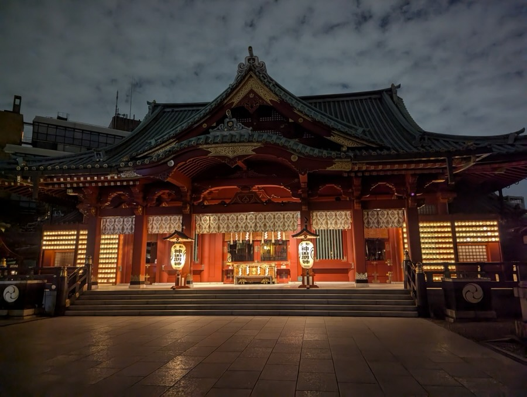
Day 1
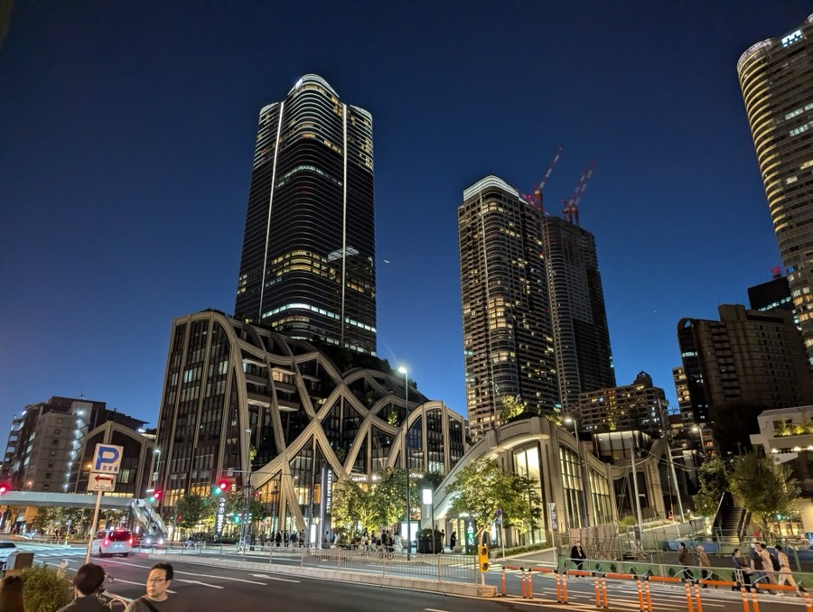
Day 2
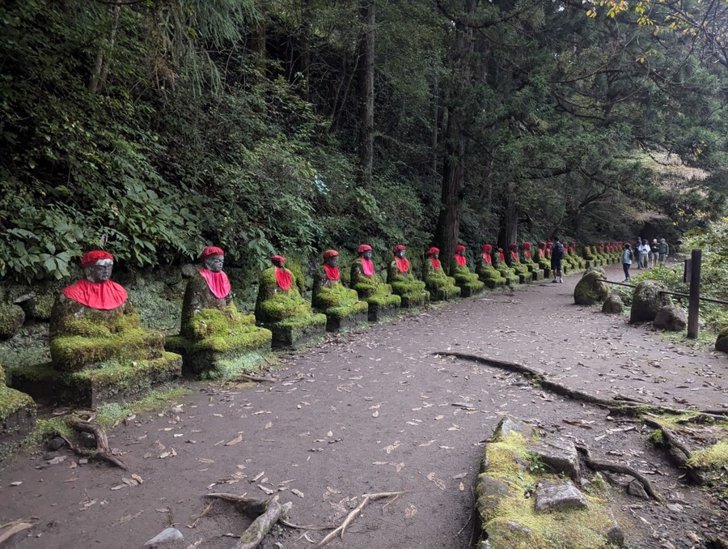
Day 3
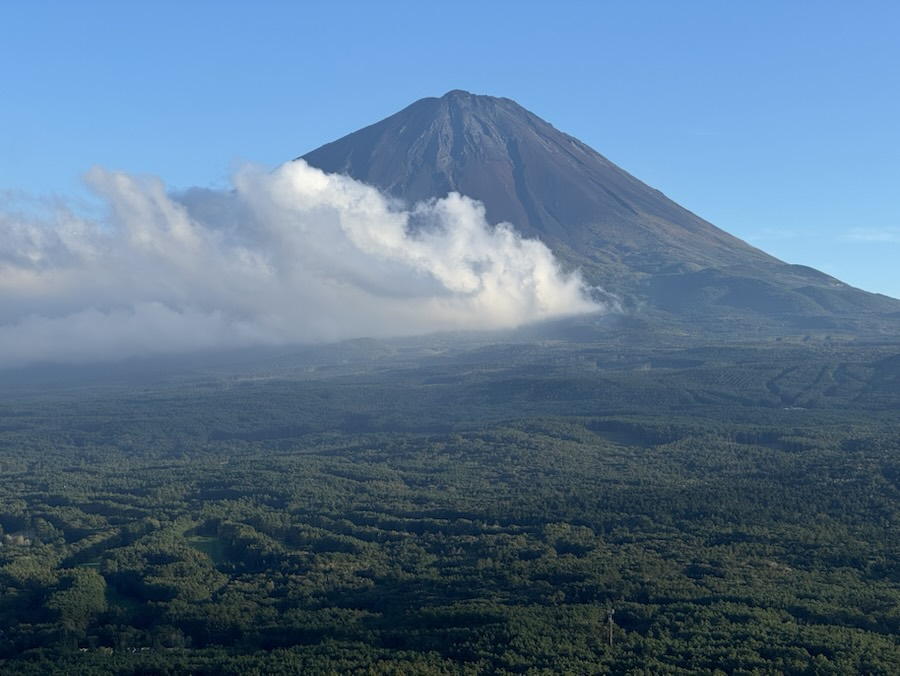
Day 4
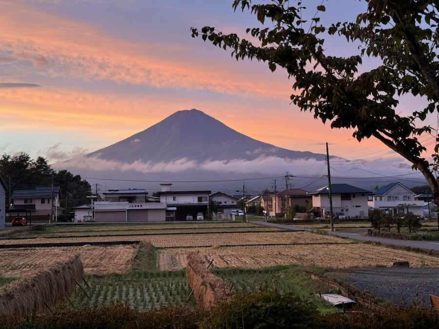
Day 5
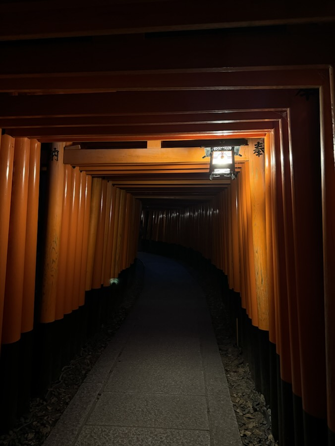
Day 6
Day 7
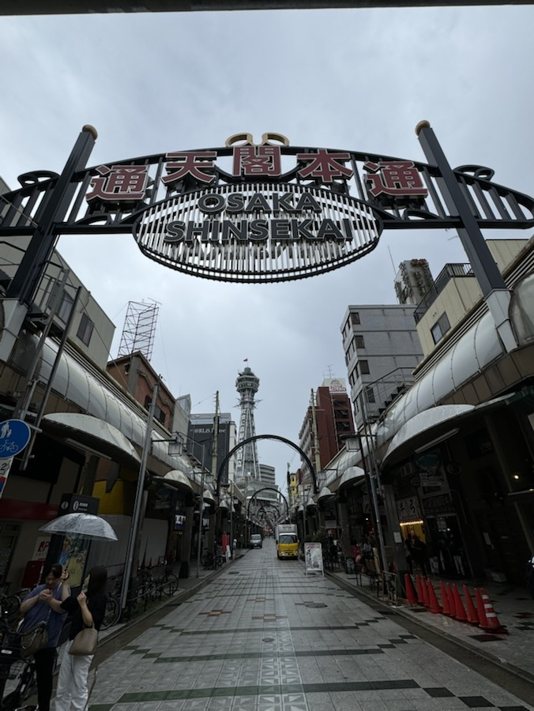
Day 8
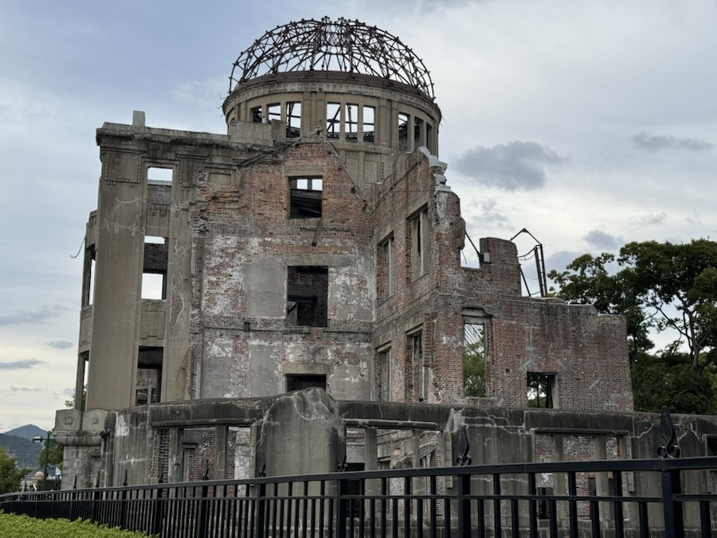
Day 9
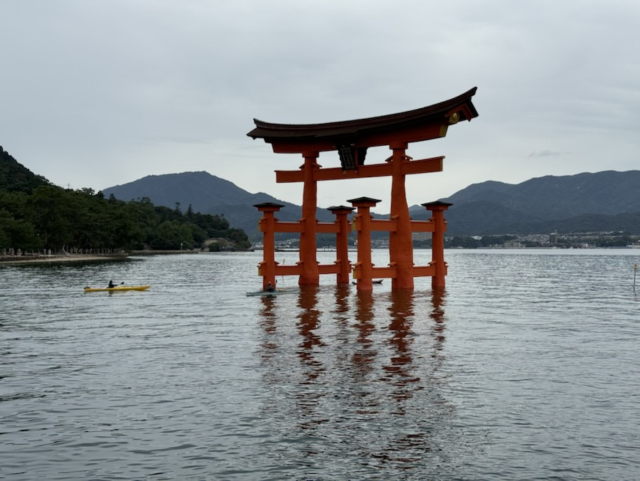
Day 10
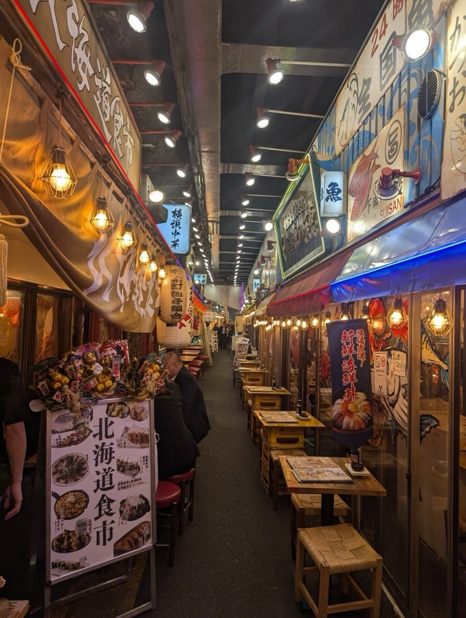
Day 11
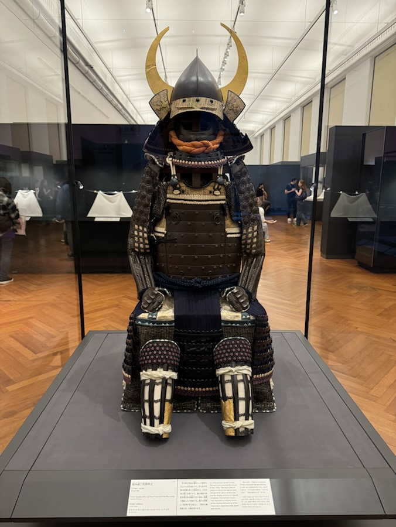
Day 12
Shinto is Japan’s own faith, of kami (gods and spirits) in nature, ancestors and places. Buddhism arrived in the 6th century, from India by way of China and Korea. For over a thousand years the two blended: kami were seen as local forms of Buddhas, and shrines and temples often shared grounds. The government formally separated them in 1868, but you still see them side by side, as in Nikko.
A shrine has a torii gate: bow twice, clap twice, pray, bow once more. A temple has a sanmon gate: bow and pray with your hands together, no clapping.
This surprised me most. Buddhism brought many Indian gods with it, renamed and recast as protectors of the Buddha: Bonten is Brahma, Taishakuten is Indra (the two often stand either side of a Buddha; Tōdai-ji has 8th-century statues of the pair), Benzaiten is Saraswati, Daikokuten comes from Mahākāla, a fierce form of Shiva, and Bishamonten or Tamonten is Vaiśravaṇa, the Kubera of Hindu tradition. Kannon, the Bodhisattva of compassion at Sensō-ji and Kiyomizu-dera, is Avalokiteśvara. There is no Brahma, Vishnu and Shiva trinity as such; the triad I saw at Nikko is Buddhist. Nara is where this first caught my attention, and it made me want to learn more.
Nara was Japan’s first permanent capital, from 710 to 784. After ten years at Nagaoka, the capital moved to Kyoto in 794 and stayed for over a thousand years. Real power often sat elsewhere, with the shoguns in Kamakura and then Edo, today’s Tokyo, which became the capital in 1868. Nikko was never a capital: it is where Tokugawa Ieyasu, founder of the Edo shogunate, is enshrined.
Fuji was hidden when we arrived, so we took a cab to Iyashi-no-Sato Nenba, a little sceptical and talking only through a translation app. He worked out that we hadn’t seen Fuji yet, watched for it, and stopped as soon as it appeared. At Nenba he offered to wait, and waited an hour or two without asking for anything. On the way back he asked if we’d like to see a local favourite: he drove up an unpaved road, hard on his car (we briefly wondered if this was a kidnapping), to Kōyōdai, a viewpoint run by an old couple. Best view of Fuji of the trip, and no one else there. Then he took us to Oishi Park.
We wanted to thank him properly. We put the money in an envelope and asked, politely, whether he’d mind if we gave him more than the agreed fare. He hesitated, then accepted.
We thought our pass was enough; it wasn’t, and the train was minutes from leaving. The driver stepped down, walked us to the ticket machine, watched us fumble, took over, worked out the fare, waited calmly while we fumbled with the cash, and then got back into his cab.
Every time we stood looking lost at a map for a few minutes, someone stopped to guide us. It happened again and again, in a city that has suffered so much.
An old cab driver looked almost hurt when I loaded my own suitcase into his car, and wouldn’t let me hold his bag to make his seat more comfortable. On the Shinkansen, the ticket inspector was unfailingly courteous and respectful.
We should have prepared better, and communication was a struggle. Yet everywhere we went, people found a way to help. We came home grateful to the people we met, and for being lucky enough to see Japan this way.
We walked around late at night without a worry. Bright streets and shops open late made the cities feel alive rather than empty.
Unlike our Central Europe trip, we didn’t rent a car. Trains took us everywhere, plus a highway bus to Mount Fuji and a local bus back down to the Shinkansen, a boat to Miyajima, and the odd cab.
We took three bullet trains: from near Mount Fuji to Kyoto, Osaka to Hiroshima, and Hiroshima back to Tokyo. Smooth, comfortable and fast; we loved every ride. For the long one back to Tokyo we upgraded to the Green Car (first class), and the service was excellent. Pick up a bento at the station before you board.
Most hotels will forward your suitcase to your next hotel for a small fee, with handwritten forms and no computer system in sight. It always arrived on time. Our trick: send it two stops ahead (Tokyo straight to Kyoto, say) and carry a backpack for the night in between. When ours hadn’t reached Kyoto yet, the hotel staff said, “Nothing gets lost in Japan.” They were right.
One card works on most city trains and metros, and in convenience stores. The Shinkansen (bullet train) is ticketed separately. Check whether your pass covers each train before you board.
An eSIM before you land, Google Maps for train routes and platforms, and a camera translation app (Google Translate, Papago) for menus and signs.
Wagyu, seafood and vegetables cooked on the grill in front of us.
It was raining, so we ducked into the shops in the castle grounds. Who expects great food there? It was the best single bite of the trip.
A Japanese drinks fair we stumbled into in Akihabara (buy coupons, taste everything), a food festival in Nara Park, grilled oysters on Miyajima, a fried-dumpling place with endless dumplings and cold Japanese beer, matcha beer in Tokyo, and a bottle of plain milk at the milk stand in Akihabara Station that we still talk about.
We did, for random desserts, fried chicken that was always juicy, and fruit sandos: soft white bread with cream and fresh fruit, the best of all, and often sold out. One day we went to Be! Fruits Sandwich at Tokyo Station, which sells nothing but fruit sandos. 7-Eleven for onigiri and sandwiches, FamilyMart for fried chicken, Lawson for desserts. With a store open on almost every corner, we never worried about food or drinks.
Cheap machines that squeeze oranges on the spot, in several places. After a long day walking in the heat and humidity, they were a lifesaver.
Some popular restaurants only take bookings through Japanese reservation apps such as Tabelog or TableCheck, which now work in English. Without one, expect long queues at the famous places in Tokyo and Kyoto.
At izakaya-style places we would order a few dishes, eat, drink, order more, and keep going for three or four hours. It’s a different rhythm from the one-main-course dinners we’re used to elsewhere, and we loved it.
Nothing fancy, just the everyday Asahi and the rest. They all say “dry” on the label, but they didn’t taste dry, and the same labels at home don’t taste the same. Our best guess is freshness: in Japan it’s brewed nearby and served fresh and very cold, often on draft, while abroad it has travelled for weeks or is brewed under licence elsewhere. We could have drunk a lot of it.
Tsukiji, Nishiki, and the long covered shopping streets were highlights in themselves: you can walk for blocks under cover, or underground. Try Hiroshima-style okonomiyaki in Hiroshima.
The famous spots were packed with people chasing the perfect photo, which took some of the joy out of them. Even so, nowhere else felt so full of history and culture. Go early, or pick the quieter temples.
The famous spots are crowded, and full of photographers with tripods. Early mornings, and places like Kōyōdai where we were alone, felt like the real Japan.
It gets dark around 5 pm, and most sights close about then. Plan the important ones for the morning.
We walked so much that our feet hurt.
The food was so-so, and it was the least clean place we saw in Japan; we even saw rats near the restaurants.
Our first night, we walked out after midnight and found women in anime costumes handing out flyers for “girlfriend” bars, where men pay for company and conversation. Harmless, but it felt strange next to everything else we saw.
Walking times are routing estimates for the stops in the order listed (FOSSGIS foot router on OpenStreetMap data), without time spent at them. Train times are roughly what our trips took. Lines between cities are straight, not the actual tracks. Photos are from the trip. Map data © OpenStreetMap contributors; map tiles by OpenFreeMap. The itinerary is also available as data and as text.